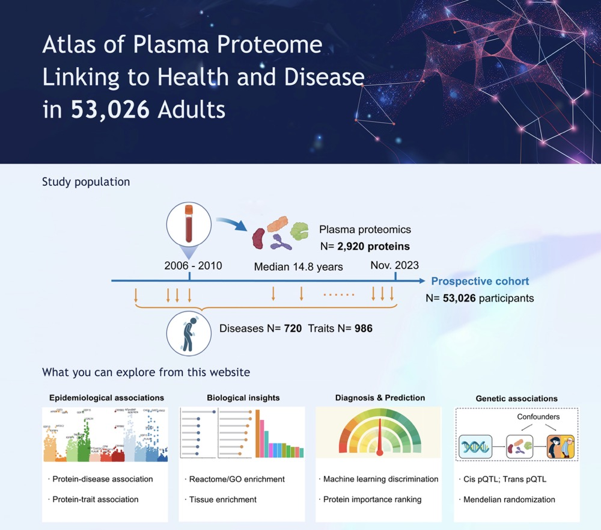

1. Regarding the research background and significance, does this work discover new knowledge or solve existing problems within the field? Please elaborate in detail.
Large-scale proteomic studies can refine the understanding of health and disease. Nevertheless, most current proteomic studies have only focused on limited disease outcomes. The lack of a comprehensive human proteome-phenome atlas raises many questions. For example, are the associated proteins specific or shared among diseases and health-related traits, and can those proteomic profiles facilitate biological classification of human diseases? How do those plasma proteins contribute to minimally invasive assessment and tracking of hundreds of diseases? Are those associated proteins causally related to diseases, and do those causal proteins hold the potential to be therapeutic targets?
This work present a comprehensive atlas of proteome-phenome associations (
https://proteome-phenome-atlas.com/) by systematically mapping 2,920 plasma proteins to the presence and onset of 720 diseases and 986 health-related traits in 53,026 individuals. This atlas provides insights into shared and characteristic biological mechanisms among diseases. The proteomic profiles, coupled with machine learning, identify useful biomarkers and prediction models for multiple health conditions simultaneously. Through integrating protein quantitative trait locus (pQTL) data, this work also illustrates the use of the atlas for causal protein discovery and further drug target prioritization. The proteome-phenome atlas furnishes an extensive resource supporting future research in screening, diagnosis, and treatment of human diseases and advancing precision medicine.

2. How did the reviewers evaluate (praise) it?
Reviewers found this a comprehensive resource that holds promise for advancing precision medicine research. This paper presents an impressive amount of data that is of huge value for the scientific community. A particular strength of this study is the integration with pQTL and diseases genome-wide association analysis (GWAS) data to perform proteome-by-phenome Mendelian randomization. This provides insights into proteins causally linked to disease, which is critically important to develop treatments.
3. If this achievement has potential applications, what are some specific applications it might have in a few years?
This work provides an open-access proteome-phenome resource (https://proteome-phenome-atlas.com/) revealing 168,100 protein-disease associations and 554,488 protein-trait associations. Moving forward, the research community will benefit from this comprehensive human proteome-phenome atlas to elucidate the biological mechanisms of diseases and accelerate the development of disease biomarkers.
Integrating pQTL with diseases GWAS data, this work determines 474 potential causal protein-disease pairs using proteome-by-phenome Mendelian randomization, providing 37 drug repurposing opportunities and prioritizing 26 novel targets with favorable safety profiles. These findings may provide directive significance for drug repositioning and future drug development.
4. Can you recount the specific steps or stages from setting the research topic to the successful completion of the research?
The initial attempt is our previous work, a proteomics study on Alzheimer’s disease (AD), that identified valuable potential biomarkers for risk prediction (DOI: 10.1038/s43587-023-00565-0). This encouraged us to explore the value of proteins for human health. We further conducted literature review and found existing gaps and societal needs, particularly regarding whether the identified proteins are AD-specific or shared across other diseases, and whether these proteins could serve as potential biomarkers or therapeutic targets in broader contexts. This led to the formation of our research topic: creating a comprehensive protein atlas for diseases and health-related traits, to answer the research questions (as detailed in Q1).
Next, we defined the phenotypes and population. In order to accurately define the diseases, we used ICD-10 codes and conducted rigorous quality control. Considering that protein alterations could occur before or after disease onset, we treated diseases as both prevalent and incident. Health-related traits were also incorporated as critical disease indicators. Then, with our research design in place, we leveraged the expertise of our interdisciplinary team to select the optimal algorithms. We then conducted the analysis, followed by writing and peer review, culminating in the successful completion of the project.
5. Were there any memorable events during the research? You can tell a story about anything related to people, events, or objects.
When reflecting on memorable events during the research, one particular moment stands out. As we were clustering the 660 diseases into 40 clusters, we found that the diseases from different chapters were gathered around, some of which were diseases with shared etiology. It was one of those moments where the potential implications of our work became much more exciting. Everyone, from data scientists to clinical researchers, began contributing ideas on how to further interpret these disease clusters. After the conversation, we conducted further investigation on the characteristic pathways and the comorbity status, which helped us to refine our research questions and expand the scope of the project. We archieved a real collaboration where the collective expertise of the team came together to push the boundaries of our initial vision. It was a reminder that research is not just about data—it’s about the ideas and interactions that propel us forward.
6. Is there a follow-up plan based on this research? If so, please elaborate.
Yes, there is a clear follow-up plan based on the findings. First, we plan to validate the protein biomarkers in clinical practice, with a particular focus on minimal-invasive approaches like blood-based biomarkers. Furthermore, we are considering collaborations with pharmaceutical companies to explore the therapeutic potential of the identified proteins, particularly those that show promise as druggable targets.
7. Without a doubt, AI is one of the hot topics of 2024, requiring extensive data support in its development. What assistance can biostatistics offer to the development of AI?
AI is largely grounded in data-driven algorithms and applications, whereas biostatistics delves deeper into theoretical frameworks. Biostatistics offers invaluable methodologies to derive meaningful and persuasive solutions tailored to the unique datasets encountered in research, while AI presents a more straightforward approach to addressing complex queries. In my point, statisticians should try to jump out of their traditional boundaries and embrace the realm of various big data, and AI developers should pay more attention on mathematical foundations. In the age of big data, no data scientist should overlook the fundamental challenges inherent in the data itself.
8. Besides the above questions, is there anything else about this achievement that you would like to add? If so, please add it below.
Another key takeaway from this work is the validation of the hypothesis that omics data, when combined with advanced AI models, can significantly enhance disease diagnosis, risk prediction, and therapeutic development. The ability to integrate omics data such as genomic, proteomic, metabolmic, and clinical data into cohesive models will further facilitate precision medicine.